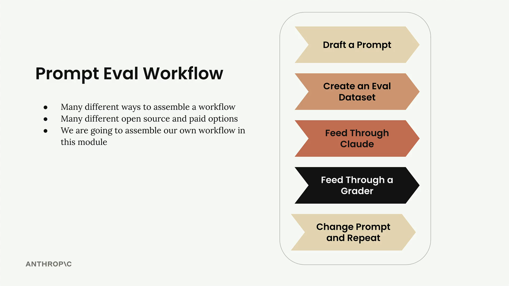
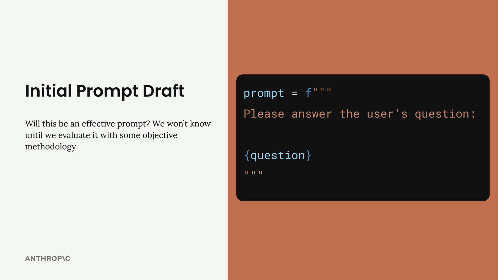
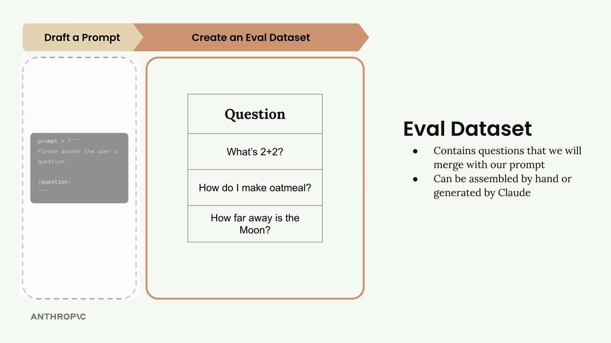
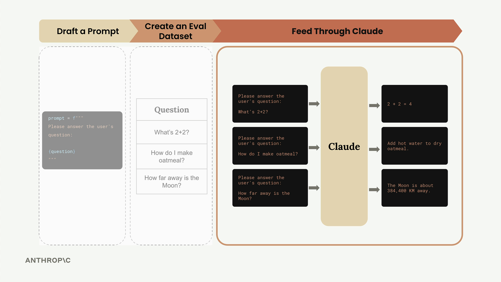
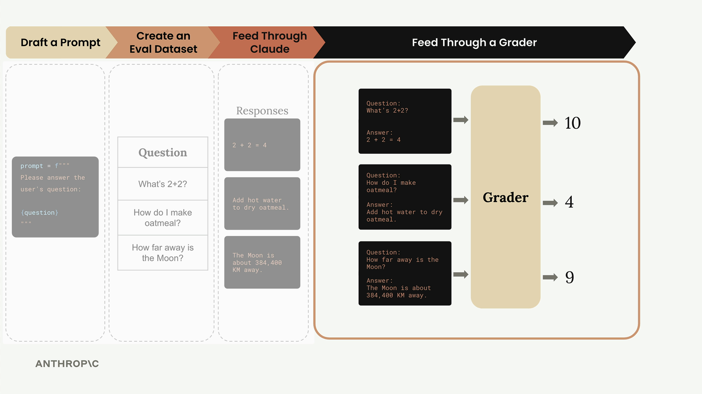
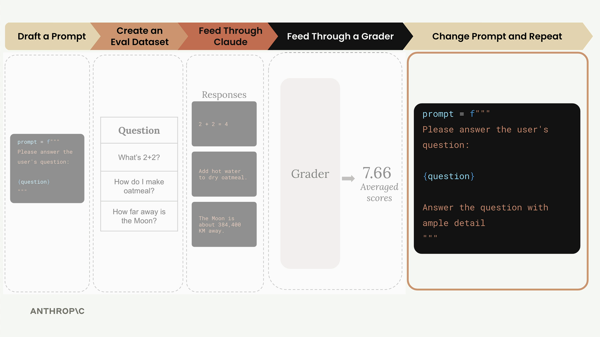
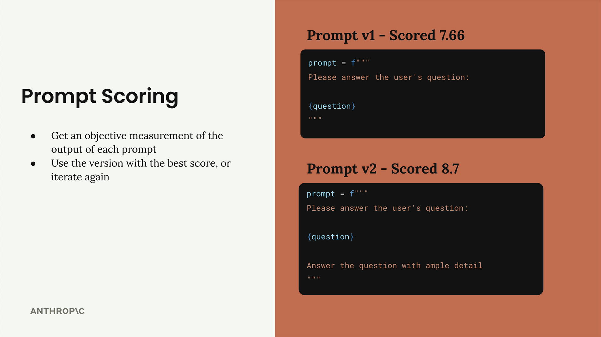

Типичный процесс оценки
Чему научитесь
Видео 4:36 и текст урока
К концу урока вы сможете:
- перечислить пять шагов процесса оценки промпта;
- объяснить роль датасета и грейдера;
- сравнивать версии промпта по среднему баллу.
Видео и текст урока.
Смотреть урок на Skilljar A typical eval workflow · 4:36Типичный процесс оценки промпта состоит из пяти ключевых шагов, которые помогают системно улучшать промпты через объективные измерения. Собрать такой процесс можно по-разному, и для этого есть множество открытых и платных инструментов, но понимание основы позволяет начать с малого и наращивать по мере надобности.

Шаг 1. Черновик промпта
Начните с первой версии промпта, которую хотите улучшить. Для примера возьмём простой промпт:
prompt = f"""
Please answer the user's question:
{question}
"""

Этот простой промпт станет точкой отсчёта (baseline) для тестов и улучшений.
Шаг 2. Датасет для оценки
Датасет для оценки содержит примеры входных данных — тех вопросов или запросов, с которыми промпт будет работать в продакшене. В датасете должны быть вопросы, которые будут подставляться в шаблон промпта.

В этом примере в датасете три вопроса:
- «What's 2+2?»
- «How do I make oatmeal?»
- «How far away is the Moon?»
В реальных оценках записей могут быть десятки, сотни и даже тысячи. Такие датасеты собирают вручную или генерируют с помощью Claude.
Шаг 3. Прогон через Claude
Возьмите каждый вопрос из датасета, подставьте его в шаблон промпта — получатся готовые промпты. Отправьте каждый Claude и получите ответы.

Например, первый вопрос превращается в:
Please answer the user's question: What's 2+2?
Claude может ответить «2 + 2 = 4» на вопрос по математике, дать инструкцию по приготовлению овсянки на второй вопрос и назвать расстояние до Луны на третий.
Шаг 4. Прогон через грейдер
Грейдер оценивает качество ответов Claude, глядя и на исходный вопрос, и на ответ. Этот шаг даёт объективную оценку — обычно по шкале от 1 до 10, где 10 — идеальный ответ, а меньшие баллы говорят, что есть что улучшать.

В нашем примере грейдер может поставить:
- вопрос по математике: 10 (идеальный ответ);
- вопрос про овсянку: 4 (нужно улучшать);
- вопрос про Луну: 9 (очень хороший ответ).
Средний балл по всем вопросам — объективная мера: (10 + 4 + 9) ÷ 3 = 7.66.
Шаг 5. Правка промпта и повтор
Теперь, когда есть исходный балл, можно изменить промпт и заново прогнать весь процесс, чтобы увидеть, улучшают ли правки результат.

Например, можно добавить в промпт больше указаний:
prompt = f"""
Please answer the user's question:
{question}
Answer the question with ample detail
"""
После прогона улучшенного промпта через тот же процесс средний балл может вырасти, скажем, до 8.7 — значит, дополнительное указание помогло Claude отвечать лучше.
Оценка промптов баллом
Главная польза такого процесса — объективное измерение качества промпта. Можно:
- сравнивать версии промпта в цифрах;
- брать версию с лучшим баллом;
- продолжать итерации в поисках ещё лучших вариантов.

Такой системный подход убирает гадание из prompt engineering и даёт уверенность, что ваши правки — действительно улучшения, а не просто другие варианты.
Дальше
Дальше курс строит такой процесс в коде для реальной задачи — начиная с генерации тестового датасета.
Оригинал урока: A typical eval workflow.